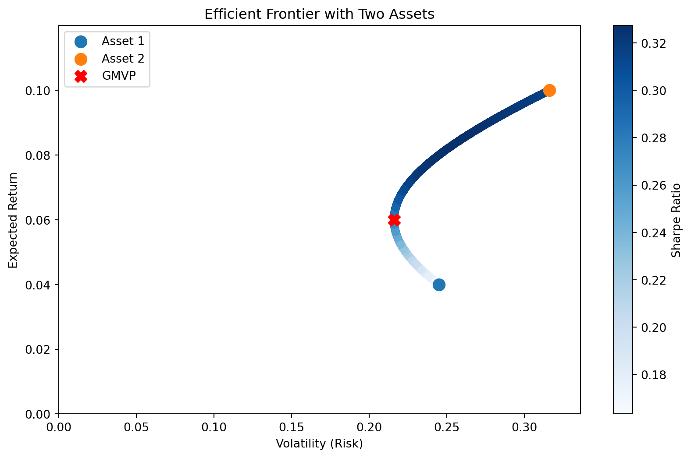

Code
import numpy as np
import matplotlib.pyplot as plt
# Define annualized returns and covariance matrix for two assets
mean_returns = np.array([0.04, 0.1]) # Expected annual returns for two assets
cov_matrix = np.array([[0.06, 0.02], [0.02, 0.10]]) # Covariance matrix of returns
individual_volatility = np.sqrt(np.diag(cov_matrix)) # Volatility of individual assets
# Define the number of portfolios to simulate
num_portfolios = 10000
# Initialize empty lists to store portfolio returns, volatilities, and weights
results = np.zeros((3, num_portfolios))
# Simulate random portfolios
for i in range(num_portfolios):
# Generate random weights for the two assets
weights = np.random.random(2)
weights /= np.sum(weights) # Ensure weights sum to 1
# Calculate portfolio return and volatility (risk)
portfolio_return = np.dot(weights, mean_returns)
portfolio_volatility = np.sqrt(np.dot(weights.T, np.dot(cov_matrix, weights)))
# Store the results
results[0, i] = portfolio_volatility
results[1, i] = portfolio_return
results[2, i] = portfolio_return / portfolio_volatility # Sharpe ratio
# Calculate the Global Minimum Variance Portfolio (GMVP)
inv_cov_matrix = np.linalg.inv(cov_matrix)
ones = np.ones(len(mean_returns))
weights_gmvp = inv_cov_matrix.dot(ones) / ones.T.dot(inv_cov_matrix).dot(ones)
gmvp_return = weights_gmvp.dot(mean_returns)
gmvp_volatility = np.sqrt(weights_gmvp.T.dot(cov_matrix).dot(weights_gmvp))
# Plot the efficient frontier
plt.figure(figsize=(10, 6))
plt.scatter(
results[0, :], results[1, :], c=results[2, :], cmap="Blues", marker="o", alpha=1
)
plt.colorbar(label="Sharpe Ratio")
# Plot individual assets as red dots
plt.scatter(
individual_volatility[0],
mean_returns[0],
# color="red",
marker="o",
s=100,
label="Asset 1",
)
plt.scatter(
individual_volatility[1],
mean_returns[1],
# color="blue",
marker="o",
s=100,
label="Asset 2",
)
# Plot GMVP
plt.scatter(gmvp_volatility, gmvp_return, color="red", marker="X", s=100, label="GMVP")
# Set axis limits to start from 0
plt.xlim(0, np.max(results[0, :]) + 0.02) # Add a small margin on the right
plt.ylim(0, np.max(results[1, :]) + 0.02) # Add a small margin on the top
# Annotate the plot
plt.title("Efficient Frontier with Two Assets")
plt.xlabel("Volatility (Risk)")
plt.ylabel("Expected Return")
plt.legend(loc="upper left")
plt.show()
